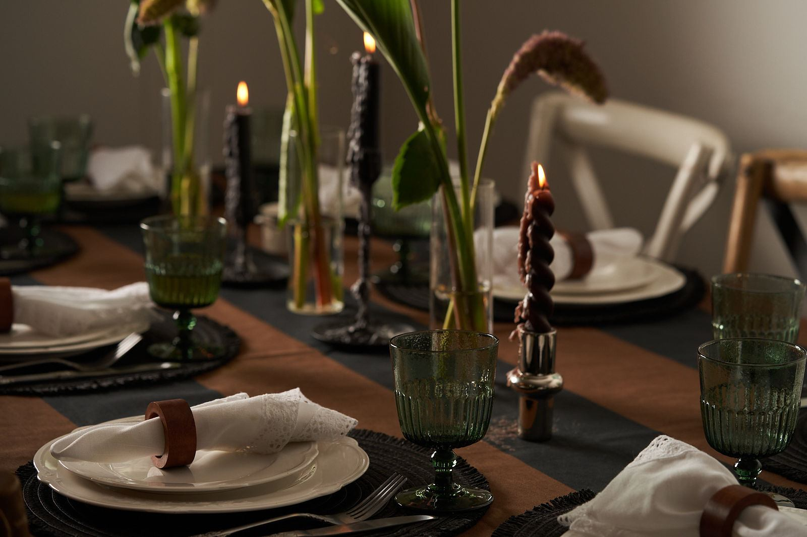

אירוע בבית ל-15 עד 30 איש: איך מארחים בלי להיתקע במטבח

ארוחה לשמונה אנשים ואירוע לשלושים הם שני דברים שונים. כשהשולחן גדל, כבר לא מספיק לבחור תפריט: צריך לחשוב על המקום, על הציוד ועל הקצב של הערב. החדשות הטובות הן שעם קצת תכנון מראש, גם אירוע גדול בבית יכול להרגיש אישי.
באירוע של 15 עד 30 איש בבית, שלושה דברים קובעים: מקום ישיבה לכולם, מטבח שהשף יכול לעבוד בו, ותפריט שמתאים לגודל השולחן. מנות משותפות שעוברות מיד ליד עובדות טוב בשולחן ארוך, וככל שמספר האורחים עולה, חשוב יותר לתאם מראש ציוד וזמני הגעה.
כמה אורחים אפשר לארח בבית?
השאלה האמיתית היא לא כמה אנשים נכנסים הביתה, אלא כמה יכולים לשבת לארוחה בנוחות. ארוחת שף היא ארוחת ישיבה, ולכן מתחילים מהשולחנות: מודדים את החלל, בודקים כמה שולחנות ייכנסו בשורה אחת או בשתיים, וסופרים כיסאות. אם המספר לא מסתדר, עדיף לצמצם את רשימת האורחים מאשר להושיב חלק מהם בצד.
באינסטגרם של ליאב אפשר לראות ערבים כאלה, משולחן של 15 איש ועד אירוע של 30.
איך מסדרים את המקום?
- שולחן אחד ארוך נותן תחושה של ארוחה משותפת, וכולם רואים את כולם.
- כמה שולחנות מתאימים כשהחלל לא מאפשר שורה אחת, או כשיש כמה קבוצות של חברים.
- מעבר פנוי מהמטבח לשולחן חשוב יותר ממה שנדמה. כשיוצאות עשרות צלחות בבת אחת, כל מכשול מאט את ההגשה.
הגשה אישית או מנות משותפות?
בשולחן של חמישה עשר איש, הגשה אישית, מנה אחרי מנה, עדיין מרגישה כמו מסעדה. כשמגיעים לשלושים, מנות משותפות שעוברות מיד ליד הן לרוב הבחירה הטבעית יותר: האוכל מגיע לשולחן חם, השיחה לא נעצרת, וכל אחד לוקח כמה שהוא רוצה. אפשר גם לשלב, למשל ביסים ומנות ראשונות לשיתוף ומנה עיקרית אישית. על המבנה הזה כתבנו מדריך נפרד.
מה צריך מבחינת ציוד?
זה החלק שהכי קל לשכוח. ספרו מראש כמה צלחות, כוסות וסכו״ם יש בבית, וזכרו שכל מנה דורשת צלחת משלה. לעשרות אורחים, החשבון מגיע מהר למספרים שאין כמעט באף בית. את מה שחסר אפשר לשכור, והכי פשוט לבדוק את זה יחד עם השף כבר כשבונים את התפריט.
| נושא | מה לבדוק |
|---|---|
| ישיבה | שולחנות וכיסאות לכל האורחים, ומעבר פנוי מהמטבח. |
| מטבח | כיריים ותנור שעובדים, משטח עבודה פנוי ומקום במקרר. |
| ציוד | צלחות, כוסות וסכו״ם לפי מספר האורחים והמנות. |
| תפריט | הגשה אישית, מנות משותפות או שילוב של שתיהן. |
| זמנים | מתי השף מגיע, מתי האורחים מגיעים ומתי מתיישבים. |
איך שומרים על הקצב של הערב?
באירוע גדול, האורחים לא מגיעים בבת אחת. לכן כדאי שהשף יתחיל עם ביסים קטנים שמחכים למגיעים, ושההתיישבות לשולחן תהיה בשעה קבועה מראש. מהרגע שכולם יושבים, המנות יוצאות בקצב של השולחן, ואתם יכולים פשוט להיות עם האורחים שלכם. אם אתם עדיין מתלבטים בין שף לקייטרינג לאירוע בגודל כזה, קראו את ההשוואה.
שאלות נפוצות
אפשר לעשות ארוחת שף לשלושים איש בבית?
כן, אם יש מקום ישיבה לכולם ומטבח פנוי לעבודה. באינסטגרם של ליאב יש ערבים של 15 ושל 30 איש. באירוע בגודל כזה מתכננים מראש את סידור השולחנות, את הציוד ואת סגנון ההגשה.
צריך לשכור ציוד לאירוע בבית?
תלוי במה שיש בבית. ספרו כמה צלחות, כוסות וסכו״ם יש לכם, וזכרו שכל מנה צריכה צלחת משלה. את מה שחסר בודקים יחד עם השף ושוכרים.